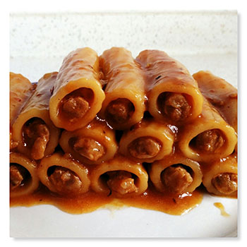

1.肉馅中加少量水（一点点）、 耗油、生抽（一点点）、 黑椒酱（我一般用亨氏的或者凤球唛的）、 五香粉、花椒粉、胡椒粉。
2.空心粉。煮熟，然后就在水里泡着吧， 能泡好大，不然最后炖的时候再变大 就会显得肉馅少了。 来个下锅前后的对比。。
3.塞肉，不摆好我怕肉馅掉出来。。 感觉记挤有强迫症了。 （有小伙伴说可以把肉馅放到塑料袋里塞）
4.平底锅（我就是喜欢平底锅， 好刷）。。加油，油热后放蒜末 和干辣椒炒香（我炒糊了）。 香味出来后放蒜蓉辣酱、 泰式甜辣酱、番茄酱（一点点）、 再来点黑椒酱。。
5.大概300ml骨汤（以前熬的骨汤， 我家都比较懒，一般做一大锅， 然后把汤盛出来放饭盒冻冰箱里， 做馄钝面条什么的慢慢用， 骨头给我两个弟弟啃）

6.小火慢炖，肉馅熟了之后, 用清水加少许淀粉化匀， 大火收汁。出锅